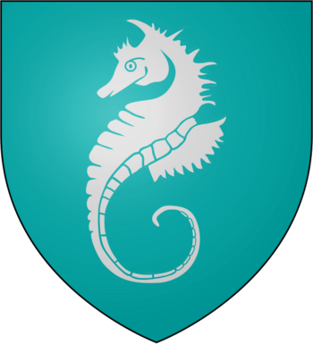

La casa Veralyon
La Casa Velaryon de Marcaderiva es una casa noble de las Tierras de la Corona y vasalla de la Casa Baratheon de Rocadragón. Su asentamiento es Marea Alta, en Marcaderiva, la isla más grande de la Bahía del Aguasnegras. Su emblema es un caballo de mar de plata sobre campo verde mar.